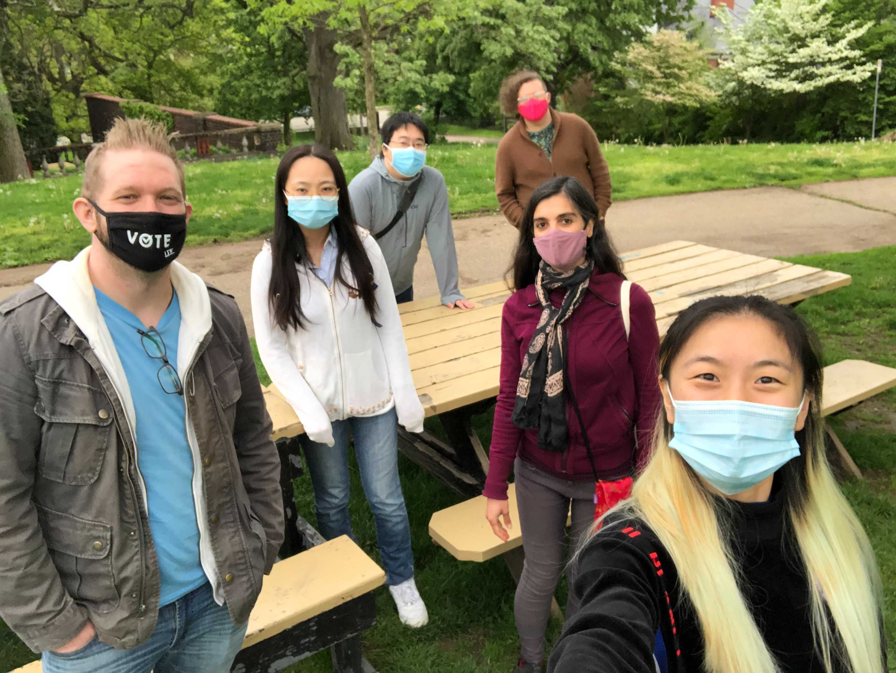

At the Sustainable Social Computing lab at the University of Pittsburgh, we research the interplay of technology and society in terms of 

How social computing systems can be studied, designed, and implemented to more effectively achieve the goals of their different stakeholders
What roles these technologies play within different communities and how individuals and communities are effected by them
How social technologies are utilized by different communities and individuals, specifically with respect to how digital and established inequalities relate to inequalities 
on the social technlogy platforms and how technology can play a role in social justice.

 You can view more details about our projects <a href='projects.html'>here</a>.


